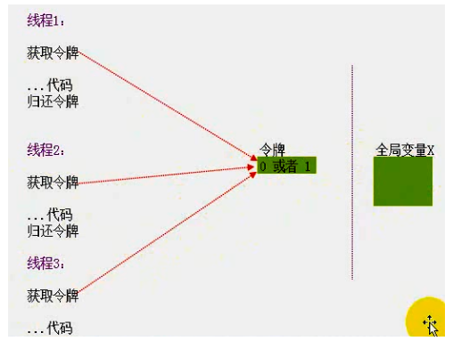

# 临界区
# 线程安全问题
每个线程都有自己的栈，而局部变量是存储在栈中的，这就意味着每个线程都有一份自己的 “局部变量 ", 如果线程仅仅使用 “局部变量” 那么就不存在线程安全问题。那如果多个线程共用 - 一个全局变量呢？
# 解决方法

# 临界区实现之线程锁
<1> 创建全局变量CRITICAL_SECTION cs;
<2> 初始化全局变量InitializeCriticalSection(&cs);
<3> 实现临界区EnterCriticalSection(&cs);
<4> 使用临界资源LeaveCriticalSection(&cs);
# 示例
#include<stdio.h> | |
#include<stdlib.h> | |
#include<windows.h> | |
int g_dwTickets = 10; | |
CRITICAL_SECTION cs; // 创建全局变量 | |
DWORD WINAPI MyFirstThreadProc(LPVOID lpParameter) | |
{ | |
EnterCriticalSection(&cs); // 实现临界区 | |
while (g_dwTickets > 0) | |
{ | |
printf("还有：%d张票\n", g_dwTickets); | |
g_dwTickets--; | |
printf("卖出一张，还有：%d张票\n", g_dwTickets); | |
} | |
LeaveCriticalSection(&cs); // 使用临界资源 | |
return 0; | |
} | |
int main(int argc, char* argv[]) | |
{ | |
HANDLE arrThread[2]; | |
InitializeCriticalSection(&cs); // 初始化全局变量 | |
arrThread[0] = CreateThread(NULL, 0, MyFirstThreadProc, NULL, 0, NULL); | |
arrThread[1] = CreateThread(NULL, 0, MyFirstThreadProc, NULL, 0, NULL); | |
WaitForMultipleObjects(2, arrThread, TRUE, INFINITE); | |
CloseHandle(arrThread[0]); | |
CloseHandle(arrThread[1]); | |
return 0; | |
} |